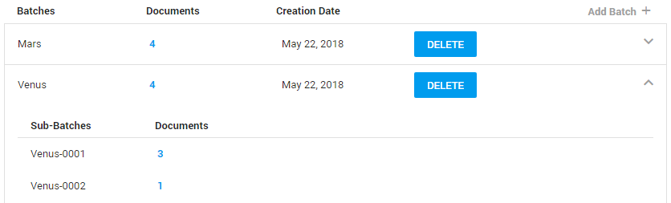

Review Batches
View all created review batches (batch name, number of documents in the batch, creation date).
- View all sub-batches of a review batch by clicking the arrow on the right side.

-
Delete a complete review batch (including sub-batches) with the Delete button:
-
Select
(top right corner) to create a new review batch.